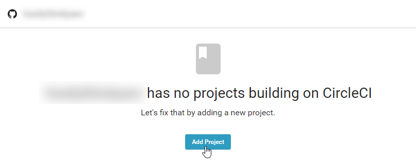
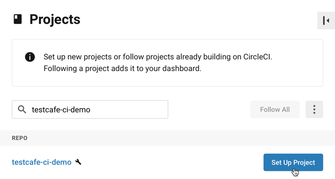
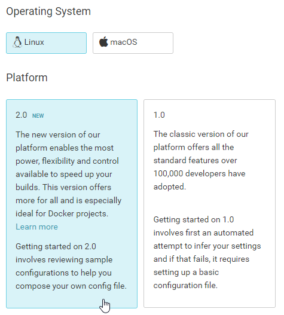
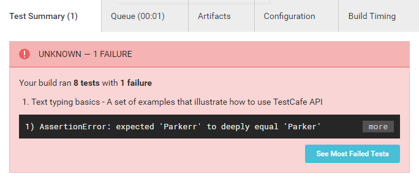

Integrate TestCafe with CircelCI
This topic describes how to integrate TestCafe tests into a CircelCI project's build process.
Prerequisites #
In this tutorial, we will fetch tests from a GitHub repository: ci-integration-demo. Fork this repository before we start.
If you use a different version control system, make sure CircleCI supports it. To learn which systems it supports, refer to the First Steps document.
Step 1 - Create a New CircleCI Project #
Log in to CircleCI using your GitHub account.
If this is the first time you are using CircleCI, you will start from an empty workspace. Create your first project by clicking the Add Project button.

You will see the list of GitHub projects associated with your account.
Find ci-integration-demo and click Setup project.

The Setup Project screen will appear.
In the Operating System section, select Linux. Then select 2.0 in the Platform section.

In the Language section, select Node.

Step 2 - Configuring the Build #
Create a .circleci directory in the ci-integration-demo repository fork and add a config.yml file there.
Use the content CircleCI provides by default with two changes:
Since you are going to perform browser testing, you need a virtual machine image that has all popular browsers pre-installed. So use the following image
# Replace '10.14' with the latest Node.js LTS version # available on Docker Hub - image: circleci/node:10.14-browsersReplace
10.14with the latest available Node.js LTS version. See the image's page on Docker Hub for the list of available versions.Add a step that imports test results to the end of the YAML. The results will be displayed in the Test Summary section.
- store_test_results: path: /tmp/test-results
The resulting YAML will look as follows.
version: 2
jobs:
build:
docker:
- image: circleci/node:10.14-browsers
working_directory: ~/repo
steps:
- checkout
- restore_cache:
keys:
- v1-dependencies-{{ checksum "package.json" }}
- v1-dependencies-
- run: yarn install
- save_cache:
paths:
- node_modules
key: v1-dependencies-{{ checksum "package.json" }}
- run: yarn test
- store_test_results:
path: /tmp/test-results
Next, add testcafe and testcafe-reporter-xunit to project's development dependencies. Open the repository root and execute the following command:
npm install --save-dev testcafe testcafe-reporter-xunit
This command installs the testcafe and testcafe-reporter-xunit modules locally and adds them to package.json.
{
"devDependencies": {
"testcafe": "*",
"testcafe-reporter-xunit": "*"
}
}
Provide a command to run tests in the scripts section.
{
"scripts": {
"test": "testcafe chrome:headless tests/**/* -r xunit:/tmp/test-results/res.xml"
},
"devDependencies": {
"testcafe": "*",
"testcafe-reporter-xunit": "*"
}
}
The test command runs tests from the tests directory in the headless Chrome. Reports are saved in the xUnit format at /tmp/test-results/res.xml.
Finally, push all changes to GitHub.
Step 3 - Running the Build #
Use the Start building button to trigger a build.

Step 4 - Viewing Test Results #
Go to the Builds section and choose a build to view its results.
